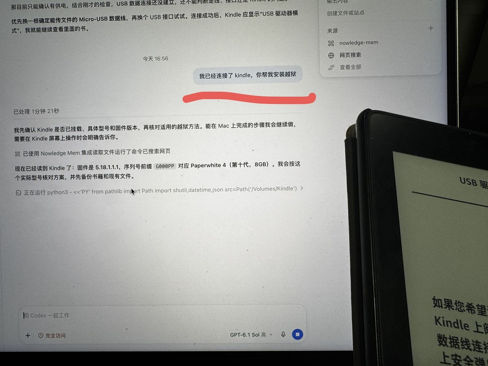
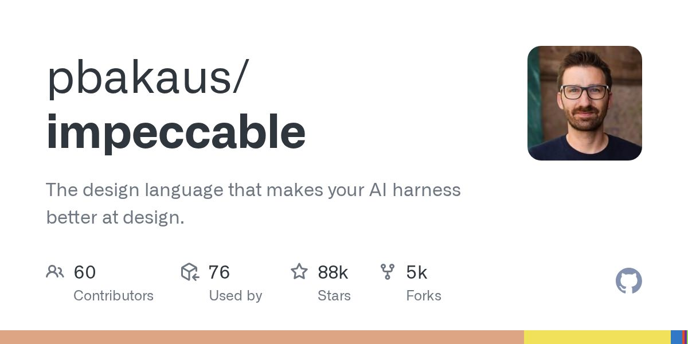

AI 日报 · 2026-10-25（周日）
时间窗口：10-24 08:00 到 10-25 08:00（台北时间）。周末官方源几乎没更新，今天条目偏少；每条都读过正文、核对过日期。和 10-22 到 10-24 日报重复的（Kimi K3.1 发布本身、Cursor 电脑操控、Claude Code v2.1.310、Codex 0.164.0 等）不再收录。
今日看点
- Claude Code 的"代言人"Thariq 离开 Anthropic： 他本人发帖确认，2.7 万赞、400 多万浏览，是今天 AI 编程圈最大的话题。
- Kimi K3.1 的真实口碑出来了： V2EX 热帖说"额度 10 分钟就烧光"，评论集中吐槽额度不透明、套餐不划算。提供了评估国产模型套餐的用户视角。
- Personal Agent 到底能干啥： V2EX 有 30 多条回复的真实用法（机票降价提醒、记账、每日资讯日报），即刻上也有人算了"县城大妈的时间不值 token 钱"这笔账。可供初学者评估 AI 助理的用途。
今日要闻
Kimi K3.1 Pro 上手后的吐槽
原文正文要点
楼主说比 K3 快、性能接近 Opus，但额度很快用完。评论里有人"上午跑三个任务 5 小时限额就满了"，也有人说单价降了但 token 消耗变多，实际成本没降，不少人转去 GLM。V2EX（10-24 10:32，35 条回复）｜卡兹克同日发了偏正面的长文：《Kimi K3.1 Pro来了，国产模型审美的新巅峰》（10-24 11:04）。可以对照不同用户的评价。
"运维要被 AI 干没了"引发讨论
原文正文要点
楼主认为半夜盯上线、写脚本和 SQL 这类活 AI 已经比人强。V2EX 热议（10-24 09:27，74 条回复，当天热度第一）
工具与更新
Claude Code、Codex、Cursor
原文正文要点
窗口内都没有新版本（Claude Code 最新还是 v2.1.310，Codex 最新是 0.165.0-alpha.1，均为昨天已收录或更早）。
旧 Kindle 越狱后用 AI 改造成阅读器

原文正文要点
向阳乔木说一根 Type-C 转 Micro-USB 线连上 Mac，让大模型处理就能越狱；装 KOReader 加微信读书插件，界面还能让 Codex 或 Claude Code 改。他还给自己的 Obsidian 插件加了"一键把 epub 发到 Kindle"。越狱推文（10-24 17:01，522 赞，593 收藏）｜发送到 Kindle（10-24 18:13）｜插件已有 3000 用户（10-24 19:36）。注意：越狱有变砖风险。
Spindle（Windows/Linux 免费开源）
原文正文要点
把文件拖到转盘上就能转 PDF、Word、PPT、Excel，压缩到指定大小（比如考试报名要求"50KB 以内"），合并 PDF、给照片打码，全程离线。r/vibecoding（10-24 21:48）。国内类似的还有 V2EX 上的 52upload.cn 日常工具箱（10-24 22:37，作者说是用 Muse 做的），都属于 AI 办公小工具案例。
热门项目与玩法
GitHub Trending 上的"让 AI 写的网页不那么 AI 味"技能

原文正文要点
impeccable（今天 +619 星，总 8.6 万）和 hallmark（今天 +455 星，总 3.2 万），都是给 Claude Code、Cursor、Codex 用的设计技能。可用于比较 AI 页面设计的改进效果。
cindy
原文正文要点
开源、号称开箱即用的中文 AI Agent，今天 +477 星。GitHub（10-25 08:01 仍在更新）
Vibe 了一个 GBA 版《三国群英传》
Personal Agent 真实用法合集
一个人用 AI 做出 Adobe 全家桶平替
原文正文要点
作者先后做了 Photoshop、Illustrator、Lightroom 的免费替代，今天发布 InDesign 替代 Folio Studio。r/vibecoding（10-24 20:29）
需求与合作动态
两天上线一个出海 AI 工具站，连收款费率都写了
原文正文要点
英文 AI 同人小说生成器，周四晚定关键词，周六晚上线，代码大部分由 Claude Code 写。作者对比了收款平台费率（Creem 3.9%+0.40 美元，Paddle 和 Lemon Squeezy 5%+0.50 美元），并指出 5 美元的小额套餐手续费会吃掉近 14%。V2EX（10-24 21:39）
用 380 行 Python 给公司做了个离线知识库
原文正文要点
公司制度文档散在网盘和群聊，SaaS 知识库卡在"数据不能出内网"和"按人头收费"。这个版本把 Markdown 丢进文件夹就能提问，回答带出处，还能按角色控制谁能看到哪些文档。反映了小公司内部知识库的需求。V2EX（10-24 23:47）
"我没钱，想用 AI 周末做个能赚钱的东西，有什么点子？"
原文正文要点
反映了发帖者寻找周末 AI 项目与收入机会的需求。r/vibecoding（10-24 20:20）
不会写代码，靠"项目管理加手动测试"用 AI 做产品
原文正文要点
用 Sonnet 规划和拆任务，再交给便宜的 Haiku 执行，自己只负责验收。呈现了非程序员通过任务管理和验收参与产品开发的方式。r/vibecoding（10-24 23:44）
Deal Radar
原文正文要点
在 18 个二手平台上蹲符合关键词和价格的商品，有新货就推送，Telegram 推送要付费。代码几乎全由 Claude 写。这一案例展示了商品监控工具的付费功能。r/vibecoding（10-24 18:27）
V2EX 初学者需求
原文正文要点
新号订阅是不是一定会被 KYC（22 条回复）、大家每月在 AI 订阅上花多少钱（楼主一个月 120 美元）。"怎么买、花多少才划算"依旧高频。
避坑
今日推荐方向
个人 AI 助理的实际用途与成本
旧 Kindle 的阅读功能改造

- 切入角度
- 了解用数据线连接设备、越狱、安装 KOReader 和微信读书插件、发送书籍的步骤，同时说明变砖风险与备份方法。
- 参考素材
- 适合读者
- 希望继续利用旧 Kindle 的读者
两天上线 AI 工具站的流程与收款成本
- 切入角度
- 按关键词与页面、Claude Code 模板开发、收款平台选择三个环节理解复盘，比较费率以及小额套餐近 14% 的手续费，并参考 Reddit 的周末工具需求与 Deal Radar 模式。
- 参考素材
- 适合读者
- 关注 AI 小工具开发与收款流程的读者
补充阅读方向
- 切入角度
- 了解 Thariq 离职说明，以及普通用户后续可以关注的 Claude Code 信息来源。
- 参考素材
- 适合读者
- 希望进一步了解相关讨论的读者。
未能核验的来源 展开查看
窗口内没有新内容（周末）
Claude Code 和 Codex Releases、Cursor Changelog（最新仍是 10-16）、Anthropic News、OpenAI News（最新 10-23）、Google AI Blog（最新 10-21）、Product Hunt（feed 里没有窗口内的新产品）、AIbase 和 AI工具集（最新都停在 10-23）、量子位（最新 10-23）、少数派（只有一篇与 AI 无关的硅谷游记）、Ben's Bites（最新 10-22）、阮一峰周刊（下一期在周五）、TLDR AI（只在工作日发）、Simon Willison（只有一篇小游戏更新，关联弱）
打不开或被拦
HN 的 hnrss feed 返回 502，r/ClaudeAI 的 RSS 被 Reddit 拦截（r/vibecoding 正常）
X List
宝玉、bcherny、官方账号在窗口内没有原创帖
这次没有抓取
机器之心、The Rundown（邮件订阅）、HF Papers、Indie Hackers、电鸭（昨天是验证码页）
按清单的剔除名单跳过
掘金 AI 热榜、今日热榜、36氪、smol.ai 等